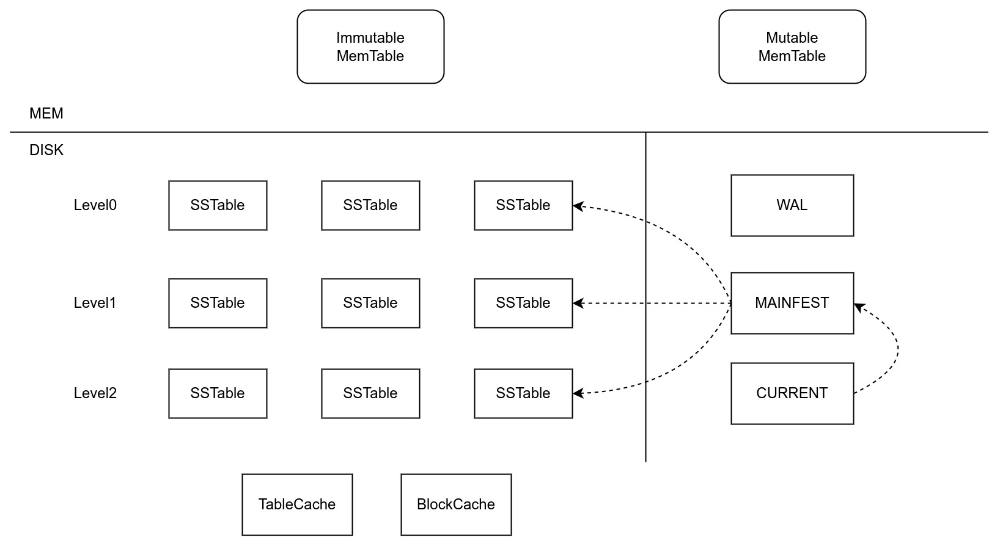

Ch02-LevelDB 架构
May 5, 2022
LevelDB 架构
1. 原理架构 #

| 组件名称 | 说明 |
|---|---|
| MemTable | |
| SSTable | 全称 Sorted String Table，按照 key 值将数据顺序存储在磁盘上。 |
| WAL | 保证可靠写入以及异常恢复。 |
| MANIFEST | 保存各种元数据，比如当前数据有哪些 SSTable，这些 SSTable 属于哪一层，每一个 SSTable 的键范围和文件大小等信息。由 CURRENT 来指向目前使用的是哪个 MANIFEST 文件。 |
| TableCache | 用于缓存 SSTable 的文件描述符、索引和 filter |
| BlockCache | 用于缓存 SSTable Block 的数据 |
2. 常见功能 #
| 功能名称 | 配置项 | 说明 |
|---|---|---|
| Comparator | options.comparator | 比较 Key 的大小 |
| Sync | options.sync | 同步写入 SSTable |
| Snapshot | options.snapshot | |
| 压缩 | options.compression | |
| 缓存 | options.block_cache | 默认使用 LRU 算法 |
| 布隆过滤器 | options.filter_policy | |
| 数据校验 | options.paranoid_checks |
3. 代码组织 #
.
├── db
│ ├── ···
│ ├── db_impl.h
│ └── db_impl.cc // db 相关接口实现
├── table // table 相关操作
│ ├── ···
│ ├── table_builder.cc
│ └── table.cc
├── include // LevelDB 相关接口接口
│ └── leveldb
│ ├── ···
│ ├── c.h
│ ├── comparator.h
│ └── db.h
├── port // OS 相关接口
│ ├── port.h
│ └── port_stdcxx.h
├── util // 工具库
│ ├── bloom.cc
│ ├── arena.cc
│ └── arena.h
├── helpers
│ └── memenv
├── doc
├── issues
├── benchmarks
├── cmake
└── third_pary
4. 文件组织 #
.
├── 000016.ldb
├── 000018.ldb // SSTABLE 文件
├── 000019.log // WAL 文件
├── LOCK // 进程锁文件，防止其他进程使用
├── LOG // 日志文件
├── LOG.old
├── CURRENT // 保存当前正在使用的 MANIFEST 文件名称
└── MANIFEST-000017 // 保存元数据信息